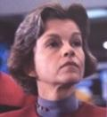

|
Kathryn Janeway
|
Dati Personali
Nata a Bloomington, Indiana, Terra, il
20.05.2332.
Genitori: Amm. Edward Janeway (-2360)
e Gretchen Janeway.
Una sorella, Phoebe.
Da bambina ha frequentato una scuola di danza classica e a sei anni era la
prima della classe (Coda); è cresciuta in una
fattoria e odia cucinare (Resolutions). Kathryn era
la scienziata di famiglia, mentre sua sorella era l'artista (Sacred
Ground). Ha studiato anche cromolinguistica, il linguaggio americano dei
segni e l'idioma gestuale dei
Leyron (Macrocosm). È
appassionata di storia irlandese (Fair Heaven). Il
motto della zia di Janeway era «A stranger is a friend you just haven't
met yet», un famoso proverbio irlandese (Fair Heaven).
È considerata uno dei migliori capitani d'astronave. Kathryn Janeway impersona
tutto ciò che è esemplare negli ufficiali della
Flotta Stellare: intelligente,
premurosa, perspicace, sensibile ai sentimenti e stati d'animo delle altre
persone, dura quando è necessario e non dimostra paura di fronte alle situazioni
più critiche.
Sua madre era una matematica, suo padre un astrofisico e, per quanto venisse
spinta verso una carriera nel campo scientifico, il suo istinto di leader si
manifestò ben presto e fu rapidamente promossa a mansioni di sempre maggior
responsabilità.
Era molto attaccata a sua madre e spesso indugiava nel parlare con lei dei più
svariati argomenti: sua madre è sempre stata il suo modello di sensibilità e
curiosità intellettuale.
Janeway era nel mezzo di una relazione con un uomo quando nel
2371 la
Voyager ha
abbandonato il territorio della Federazione, iniziando la sua inaspettata
missione ai confini della galassia.
In 11:59 Janeway scopre la storia della sua
antenata Shannon O'Donnel, nata nel 1958, come gliela hanno raccontata non è
accurata. La O'Donnel non era una astronauta non avendo mai completato il
programma di addestramento, non è stata la realizzatrice del Millennium Gate,
ma solo uno degli ingegneri associati. Inoltre non ha mai partecipato
all'esplorazione marziana.
Assegnamenti
-
Inizialmente, per il ruolo del Capitano Nicole Janeway era stata chiamata
Genevieve Bujold, la quale ha rinunciato all'incarico dopo alcuni giorni di
riprese in quanto si era resa conto di non essere in grado di sostenere il
ritmo della produzione.
- Il nome del personaggio deriva dalla scrittrice femminista americana
Elizabeth Janeway. Questo nome è anche riportato in una delle prime versioni
della bibbia.
- Il giorno e il mese della nascita di Janeway si vedono in
Year of Hell - Part I, mentre l'anno viene
citato nella scheda di Janeway nel gioco Elite Force.